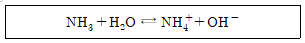
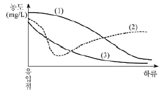
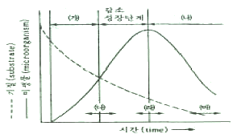
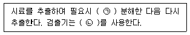
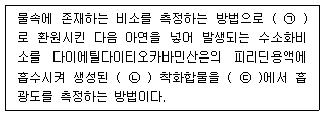
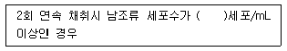
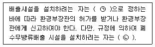
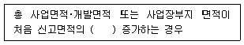

수질환경산업기사 (2020-08-22 기출문제)
1과목: 수질오염개론
1. Wipple의 하천의 생태변화에 따른 4지대 구분 중 분해지대에 관한 설명으로 옳지 않은 것은?
- 오염에 잘 견디는 곰팡이류가 심하게 번식한다.
- 여름철 온도에서 DO 포화도는 45% 정도에 해당된다.
- 탄산가스가 줄고 암모니아성 질소가 증가한다.
- 유기물 혹은 오염물을 운반하는 하수거의 방출지점과 가까운 하류에 위치한다.
(정답률: 55%)

2. 수중의 암모니아를 함유한 용액은 다음과 같은 평형 때문에 수산화암모늄이라고 한다.

0.25M - NH3 용액 500mL를 만들기 위한 시약의 부피(mL)는? (단, NH3 분자량 17.03, 진한 수산화암모늄 용액(28.0 wt%의 NH3 함유)의 밀도 = 0.899g/cm3)
- 4.23
- 8.46
- 14.78
- 29.56
(정답률: 48%)
3. 적조의 발생에 관한 설명으로 옳지 않은 것은?
- 정체해역에서 일어나기 쉬운 현상이다.
- 강우에 따라 오염된 하천수가 해수에 유입될 때 발생될 수 있다.
- 수괴의 연직 안정도가 크고 독립해 있을 때 발생한다.
- 해역의 영양 부족 또는 염소농도 증가로 발생된다.
(정답률: 74%)
4. 산소 포화농도가 9.14mg/L인 하천에서 t = 0일 때 DO농도가 6.5mg/L라면 물이 3일 및 5일 흐른 후 하류에서의 DO농도(mg/L)는? (단, 최종 BOD = 11.3mg/L, K1 = 0.1/day, K2 = 0.2/day, 상용대수 기준)
- 3일 후 = 5.7, 5일 후 = 6.1
- 3일 후 = 5.7, 5일 후 = 6.4
- 3일 후 = 6.1, 5일 후 = 7.1
- 3일 후 = 6.1, 5일 후 = 7.4
(정답률: 52%)
5. 수중의 질소순환과정인 질산화 및 탈질 순서를 옳게 나타낸 것은?
- NH3 → NO2- → NO3- → NO2- → N2
- NO3- → NO2- → NH3 → NO2- → N2
- NO3- → NO2- → N2 → NH3 → NO2-
- N2 → NH3 → NO3- → NO2-
(정답률: 75%)
6. 미생물의 증식 단계를 가장 올바른 순서대로 연결한 것은?
- 정지기 - 유도기 - 대수증식기 - 사멸기
- 대수증식시 - 유도기 - 사멸기 - 정지기
- 유도기 - 대수증식기 - 사멸기 - 정지기
- 유도기 - 대수증식기 - 정지기 - 사멸기
(정답률: 74%)
7. 하천에 유기물질이 배출되었을 때 하천의 수질변화를 나타낸 것이다. 그림 중 (2)곡선이 나타내는 수질지표로 가장 적절한 것은?

- DO
- BOD
- SS
- COD
(정답률: 75%)
8. 호소에서 계절에 따른 물의 분포와 혼합상태에 관한 설명으로 옳은 것은?
- 겨울철 심수층은 혐기성 미생물의 증식으로 유기물이 적정하게 분해되어 수질이 양호하게 된다.
- 봄, 가을에는 물의 밀도 변화에 의한 전도현상(Turn Over)이 일어난다.
- 깊은 호수의 경우 여름철의 심수층 수온변화는 수온약층보다 크다.
- 여름철에는 표수층과 심수층 사이에 수온의 변화가 거의 없는 수온약층이 존재한다.
(정답률: 73%)
9. 호소의 수질검사결과, 수온이 18℃, DO 농도가 11.5mg/L이었다. 현재 이 호소의 상태에 대한 설명으로 가장 적합한 것은?
- 깨끗한 물이 계속 유입되고 있다.
- 대기 중의 산소가 계속 용해되고 있다.
- 수서 동물이 많이 서식하고 있다.
- 조류가 다량 증식하고 있다.
(정답률: 61%)
10. 수중의 용존산소에 대한 설명으로 옳지 않은 것은?
- 수온이 높을수록 용존산소량은 감소한다.
- 용존염류의 농도가 높을수록 용존산소량은 감소한다.
- 같은 수온 하에서는 담수보다 해수의 용존산소량이 높다.
- 냄새 발생의 원인이 된다.
(정답률: 57%)
11. 분뇨처리과정에서 병원균과 기생충란을 사멸시키기 위한 가장 적절한 온도는?
- 25 ~ 30℃
- 35 ~ 40℃
- 45 ~ 50℃
- 55 ~ 60℃
(정답률: 71%)
12. 물의 특성으로 옳지 않은 것은?
- 유용한 용매
- 수소결합
- 비극성 형성
- 육각형 결정구조
(정답률: 74%)
13. 우리나라의 물이용 형태별로 볼 때 수요가 가장 많은 것는?
- 생활용수
- 공업용수
- 농업용수
- 유지용수
(정답률: 78%)
14. 자연계에서 발생하는 질소의 순환에 관한 설명으로 옳지 않은 것은?
- 공기 중 질소를 고정하는 미생물은 박테리아와 곰팡이로 나누어진다.
- 암모니아성질소는 호기성조건하에서 탈질균의 활동에 의해 질소로 변환된다.
- 질산화 박테리아는 화학합성을 하는 독립영양미생물이다.
- 질산화 과정 중 암모니아성질소에서 아질산성질소로전환되는 것보다 아질산성 질소에서 질산성 질소로 전환되는 것이 적은 양의 산소가 필요하다.
(정답률: 43%)
15. 전해질 M2X3의 용해도적 상수에 대한 표현으로 옳은 것은?
- Ksp=[M3+]2[X2-]3
- Ksp=[2M3+][3X2-]
- Ksp=[2M3+][3X2-]3
- Ksp=[M3+][X2-]
(정답률: 68%)
16. 수분함량 97%의 슬러지 14.7m3를 수분함량 85%로 농축하면 농축 후 슬러지 용적(m3)은? (단, 슬러지 비중 = 1.0)
- 1.92
- 2.94
- 3.21
- 4.43
(정답률: 62%)
17. 0.04M NaOH용액의 농도(mg/L)는? (단, 원자량 Na= 23)
- 1,000
- 1,200
- 1,400
- 1,600
(정답률: 64%)
18. 탄광폐수가 하천이나 호수, 저수지에 유입될 경우 발생될 수 있는 는 오염의 형태와 가장 거리가 먼 것은?
- 부식성이 높은 수질이 될 수 있다.
- 대체적으로 물의 pH를 낮춘다.
- 비탄산 경도를 높이게 된다.
- 일시경도를 높이게 된다.
(정답률: 53%)
19. 20℃ 5일 BOD가 50mg/L인 하수의 2일 BOD(mg/L)는? (단, 20℃, 탈산소계수 k = 0.23day-1이고, 자연대수 기준)
- 21
- 24
- 27
- 29
(정답률: 53%)
20. 폐수의 분석결과 COD가 450mg/L이고, BOD5가 300mg/L였다면 NBDCOD(mg/L)는? (단, 탈산소계수 K1 =0.2/day, base는 상용대수)
- 약 76
- 약 84
- 약 117
- 약 136
(정답률: 58%)
2과목: 수질오염방지기술
21. 고형물 농도 10g/L인 슬러지를 하루 480m3 비율로 농축 처리하기 위해 필요한 연속식 슬러지 농축조의 표면적(m2)은? (단, 농축조의 고형물 부하 = 4kg/m2·hr)
- 50
- 100
- 150
- 200
(정답률: 44%)
22. 폭 2m, 길이 15m인 침사지에 100cm의 수심으로 폐수가 유입할 때 체류시간이 50sec이라면 유량(m3/hr)은?
- 2,025
- 2,160
- 2,240
- 2,530
(정답률: 56%)
23. 처리수의 BOD농도가 5mg/L인 폐수처리 공정의 BOD 제 효율은 1차 처리 40%, 2차 처리 80%, 3차 처리 15%이다. 이 폐수처리 공정에 유입되는 유입수의 BOD농도(mg/L)는?
- 39
- 49
- 59
- 69
(정답률: 53%)
24. 일반적인 도시하수 처리 순서로 알맞은 것은?
- 스크린 - 침사지 - 1차침전지 - 포기조 - 2차침전지 - 소독
- 스크린 - 침사지 - 포기조 - 1차침전지 - 2차침전지 - 소독
- 소독 - 스크린 - 침사지 - 1차침전지 - 포기조 - 2차침전지
- 소독 - 스크린 - 침사지 - 포기조 - 1차침전지 - 2차침전지
(정답률: 71%)
25. 폐수량 20,000m3/day, 체류시간 30분, 속도경사 40sec-1의 응집 침전조를 설계할 때 교반기 모터의 동력효율을 60%로 예상 한다면 응집침전조의 교반기에 필요한 모터의 총동력(W)은? (단, μ = 10-3 kg/m·s)
- 417
- 667.2
- 728.5
- 1,112
(정답률: 38%)
26. 1,000m3 폐수 중 부유물질 농도가 200mg/L일 때 처리효율이 70%인 처리장에서 발생슬러지량(m3)은? (단, 부유물질 처리만을 기준으로 하며 기타조건은 고려하지 않음, 슬러지 비중 = 1.03, 함수율 = 95%)
- 2.36
- 2.46
- 2.72
- 2.96
(정답률: 37%)
27. BOD 1,000mg/L, 유량 1,000m3/day인 폐수를 활성슬 러지법으로 처리하는 경우, 포기조의 수심을 5m로 할 때 필요한 포기조의 표면적(m2)은? (단, BOD 용적부하 0.4kg/m3·day)
- 400
- 500
- 600
- 700
(정답률: 59%)
28. 모래여과상에서 공극 구멍보다 더 작은 미세한 부유물질을 제거함에 있어 모래의 주요 제거기능과 가장 거리가 먼 것은?
- 부착
- 응결
- 거름
- 흡착
(정답률: 45%)
29. 공장에서 보일러의 열전도율이 저하되어 확인한 결과, 보일러 내부에 형성된 스케일이 문제인 것으로 판단되었다. 일반적으로 스케일 형성의 원인이 되는 물질은?
- Ca2+, Mg2+
- Na+, K+
- Cu2+, Fe2+
- Na+, Fe2+
(정답률: 70%)
30. 미생물을 회분식 배양하는 경우의 일반적인 성장상태를 그림으로 나타낸 것이다. ㉮, ㉯의 ( )안에 미생물의 적합 한 성장 단계 및 ㉰, ㉱, ㉳안에 활성슬러지공법 중 재래식, 고율, 장기폭기의 운전 범위를 맞게 나타낸 것은?

- ㉮ 대수성장단계, ㉯ 내생성장단계, ㉰ 재래식 ㉱ 고율, ㉳ 장기폭기
- ㉮ 내생성장단계, ㉯ 대수성장단계, ㉰ 재래식 ㉱ 고율, ㉳ 장기폭기
- ㉮ 대수성장단계, ㉯ 내생성장단계, ㉰ 재래식 ㉱ 장기폭기, ㉳ 고율
- ㉮ 대수성장단계, ㉯ 내생성장단계, ㉰ 고율, ㉱ 재래식, ㉳ 장기폭기
(정답률: 50%)
31. 분무식 포기장치를 이용하여 CO2농도를 탈기시키고자 한다. 최초의 CO2농도 30g/m3 중에서 12g/m3을 제거할 수 있을때 효율계수(E)와 최초 CO2농도가 50g/m3일 경우 유출수 중CO2농도(Ce, g/m3)는? (단, CO2의 포화농도 = 0.5g/m3)
- E = 0.6, Ce = 30
- E = 0.4, Ce = 20
- E = 0.6, Ce = 20
- E = 0.4, Ce = 30
(정답률: 34%)
32. 폐수를 염소 처리하는 목적으로 가장 거리가 먼 것은?
- 살균
- 탁도 제거
- 냄새 제거
- 유기물 제거
(정답률: 62%)
33. 수중에 존재하는 대상 항목별 제거방법이 틀리게 짝지어진 것은?
- 부유물질 - 급속여과, 응집침전
- 용해성 유기물질 - 응집침전, 오존산화
- 용해된 염류 - 역삼투법, 이온교환
- 세균, 바이러스 - 소독, 급속여과
(정답률: 63%)
34. 각종 처리법과 그 효과에 영향을 미치는 주요한 인자의 조합으로 틀린 것은?
- 침강분리법 - 현탁입자와 물의 밀도차
- 가압부상법 - 오수와 가압수와의 점성차
- 모래여과법 - 현탁입자의 크기
- 흡착법 - 용질의 흡착성
(정답률: 55%)
35. 유기인 함유 폐수에 관한 설명으로 틀린 것은?
- 폐수에 함유된 유기인 화합물은 파라티온, 말라티온 등의 농약이다.
- 유기인 화합물은 산성이나 중성에서 안정하다.
- 물에 쉽게 용해되어 독성을 나타내기 때문에 전처리 과정을 거친 후 생물학적 처리법을 적용할 수 있다.
- 일반적이고 효과적인 방법으로는 생석회 등의 알칼리로 가수분해 시키고 응집침전 또는 부상으로 전처리한 다음 활성탄 흡착으로 미량의 잔유물질을 제거시키는 것이다.
(정답률: 52%)
36. 포기조 내의 MLSS가 4,000mg/L, 포기조 용적이 500m3 인 활성슬러지 공정에서 매일 25m3의 폐슬러지를 인발하여 소화조에서 처리한다면 슬러지의 평균체류시간(day)은? (단, 반송슬러지 농도 = 20,000mg/L, 유출수의 SS농도는 무시)
- 2
- 3
- 4
- 5
(정답률: 50%)
37. 회전원판법(RBC)에 관한 설명으로 가장 거리가 먼 것은?
- 부착성장공법으로 질산화가 가능하다.
- 슬러지의 반송율은 표준 활성슬러지법보다 높다.
- 활성슬러지법에 비해 처리수의 투명도가 나쁘다.
- 살수여상법에 비해 단회로 현상의 제어가 쉽다.
(정답률: 47%)
38. 슬러지 반송율을 25%, 반송슬러지 농도를 10,000mg/L일 때 포기조의 MLSS농도(mg/L)는? (단, 유입 SS농도를 고려하지 않음)
- 1,200
- 1,500
- 2,000
- 2,500
(정답률: 37%)
39. 급속여과 장치에 있어서 여과의 손실수두에 영향을 미치지 않는 인자는?
- 여과면적
- 입자지름
- 여액의 점도
- 여과속도
(정답률: 54%)
40. 활성슬러지법에서 포기조에 균류(fungi)가 번식하면 처리효율이 낮아지는 이유로 가장 알맞은 것은?
- BOD 보다는 COD를 더 잘 제거시키기 때문이다.
- 혐기성 상태를 조성시키기 때문이다.
- floc의 침강성이 나빠지기 때문이다.
- fungi가 bacteria를 잡아먹기 때문이다.
(정답률: 56%)
3과목: 수질오염공정시험방법
41. 측정하고자 하는 금속물질이 바륨인 경우의 시험방법이 아닌 것은?
- 자외선/가시선 분광법
- 유도결합플라스마 원자발광분광법
- 유도결합플라스마 질량분석법
- 원자흡수분광광도법
(정답률: 50%)
42. 공장 폐수의 COD를 측정하기 위하여 검수 25mL에 증류수를 가하여 100mL로 실험한 결과 0.025N- KMnO4의 양이 10.1 mL 최종 소모되었을 때 이 공장의 COD(mg/L)는? (단, 공시험의 적정에 소요된 0.025N - KMnO4 = 0.1mL, factor 1.02, 0.025N KMnO4의 역가 = 1.0 )(오류 신고가 접수된 문제입니다. 반드시 정답과 해설을 확인하시기 바랍니다.)
- 13.3
- 16.7
- 24.8
- 32.2
(정답률: 18%)
43. 메틸렌블루에 의해 발색 시킨 후 자외선/가시선 분광법으로 측정할 수 있는 항목은?
- 음이온 계면활성제
- 휘발성 탄화수소류
- 알킬수은
- 비소
(정답률: 56%)
44. 수질오염공정시험기준의 관련 용어 정의가 잘못된 것은?
- ‘감압 또는 진공’이라 함은 따로 규정이 없는 한 15mmH2O 이하를 말한다.
- ‘냄새가 없다’라고 기재한 것은 냄새가 없거나, 또는 거의 없는 것을 표시하는 것이다.
- ‘약’이라 함은 기재된 양에 대하여 ±10 % 이상의 차가 있어서는 안 된다.
- 시험조작 중 ‘즉시’란 30초 이내에 표시된 조작을 하는 것을 뜻한다.
(정답률: 69%)
45. 총대장균군 시험(평판집락법) 분석 시 평판의 집락수는 어느 정도 범위가 되도록 시료를 희석하여야 하는가?
- 1 ~ 10개
- 10 ~ 30개
- 30 ~ 300개
- 300 ~ 500개
(정답률: 55%)
46. 색도측정법(투과율법)에 관한 설명으로 옳지 않은 것은?
- 아담스－니컬슨의 색도공식을 근거로 한다.
- 시료 중 백금－코발트 표준물질과 아주 다른 색상의 폐･하수는 적용할 수 없다.
- 색도의 측정은 시각적으로 눈에 보이는 색상에 관계없이 단순 색도차 또는 단일 색도차를 계산한다.
- 시료 중 부유물질은 제거하여야 한다.
(정답률: 57%)
47. 다음은 기체크로마토그래피에 의한 폴리클로리네이티드비페닐 시험방법이다. ( )안에 가장 적합한 것은?

- ㉠ 산, ㉡ 수소불꽃이온화 검출기
- ㉠ 산, ㉡ 전자포획 검출기
- ㉠ 알칼리, ㉡ 수소불꽃이온화 검출기
- ㉠ 알칼리, ㉡ 전자포획 검출기
(정답률: 46%)
48. pH 표준액의 조제 시 보통 산성 표준액과 염기성 표준액의 각각 사용기간은?
- 1개월 이내, 3개월 이내
- 2개월 이내, 2개월 이내
- 3개월 이내, 1개월 이내
- 3개월 이내, 2개월 이내
(정답률: 54%)
49. 생물화학적 산소요구량 측정방법 중 시료의 전처리에 관한 설명으로 틀린 것은?
- pH가 6.5∼8.5의 범위를 벗어나는 산성 또는 알칼리성 시료는 염산용액(1M) 또는 수산화나트륨용액(1M)으로 시료를 중화하여 pH 7∼7.2로 맞춘다.
- 시료는 시험하기 바로 전에 온도를 20±1℃로 조정한다.
- 수온이 20℃ 이하일 때의 용존산소가 과포화 되어 있을 경우에는 수온을 23 ∼ 25℃로 상승시킨 이후에 15분간 통기하고 방치하고 냉각하여 수온을 다시 20℃로 한다.
- 잔류염소가 함유된 시료는 시료 100mL에 아지드화나트륨 0.1g과 요오드화칼륨 1g을 넣고 흔들어 섞은 다음 수산화나트륨을 넣어 알칼리성으로 한다.
(정답률: 45%)
50. 자외선/가시선 분광법으로 비소를 측정할 때 방법으로 ( )안에 옳은 내용은?

- ㉠ 3가비소, ㉡ 청색, ㉢ 620 nm
- ㉠ 3가비소, ㉡ 적자색, ㉢ 530 nm
- ㉠ 6가비소, ㉡ 청색, ㉢ 620 nm
- ㉠ 6가비소, ㉡ 적자색, ㉢ 530 nm
(정답률: 58%)
51. 시안 화합물을 측정할 때 pH 2 이하의 산성에서 에틸렌디아민테트라 초산이나트륨을 넣고 가열 증류하는 이유는?
- 킬레이트 화합물을 발생시킨 후 침전시켜 중금속 방해를 방지하기 위하여
- 시료에 포함된 유기물 및 지방산을 분해시키기 위하여
- 시안화물 및 시안착화합물의 대부분을 시안화수소로 유출시키기 위하여
- 시안화합물의 방해성분인 황화합물을 유화수소로 분리시키기 위하여
(정답률: 42%)
52. 시판되는 농축 염산은 12N이다. 이것을 희석하여 1N의 염산 200mL를 만들고자 한다. 농축 염산은 몇 mL가 필요한가?
- 7.9
- 16.7
- 21.3
- 31.5
(정답률: 52%)
53. 금속 필라멘트 또는 전기저항체를 검출소자로 하여 금속판 안에 들어 있는 본체와 여기에 직류전기를 공급하는 전원회로, 전류조절부 등으로 구성된 기체크로마토그래프 검출기는?
- 열전도도검출기
- 전자포획형검출기
- 알칼리열 이온화검출기
- 수소염 이온화검출기
(정답률: 46%)
54. 취급 또는 저장하는 동안에 기체 또는 미생물이 침입하지 아니하도록 내용물을 보호하는 용기는?
- 밀봉용기
- 밀폐용기
- 기밀용기
- 차광용기
(정답률: 61%)
55. 유기물 함량이 비교적 높지 않고 금속의 수산화물, 산화물, 인산염 및 황화물을 함유하고 있는 시료에 적용되는 전처리 방법은?
- 질산에 의한 분해
- 질산－염산에 의한 분해
- 질산－황산에 의한 분해
- 질산－과염소산에 의한 분해
(정답률: 59%)
56. 최대유속과 최소유속의 비가 가장 큰 유량계는?
- 벤튜리미터(Venturi meter)
- 오리피스(Orifice)
- 피토우(Pitot)관
- 자기식 유량 측정기(Magnetic flow meter)
(정답률: 51%)
57. n－헥산추출물질 시험법에서 염산(1＋1)으로 산성화 할 때 넣어주는 지시약과 pH의 연결이 맞는 것은?
- 메틸레드지시액 pH 4.0 이하
- 메틸오렌지지시액 pH 4.0 이하
- 메틸레드지시액 pH 4.5 이하
- 메틸렌블루지시액 pH 4.5 이하
(정답률: 66%)
58. 질산성 질소 분석 방법과 가장 거리가 먼 것은?
- 이온크로마토그래피법
- 자외선/가시선 분광법 - 부루신법
- 자외선/가시선 분광법 - 활성탄흡착법
- 연속흐름법
(정답률: 50%)
59. 온도표시기준 중 “상온”으로 가장 적합한 범위는?
- 1 ∼35℃
- 10 ∼15℃
- 15 ∼25℃
- 20 ∼35℃
(정답률: 60%)
60. 시료용기를 유리제로만 사용하여야 하는 것은?
- 불소
- 페놀류
- 음이온계면활성제
- 대장균군
(정답률: 57%)
4과목: 수질환경관계법규
61. 폐수 재이용업 등록기준에 관한 내용 중 알맞지 않은 것은?
- 기술능력 : 수질환경산업기사 1인 이상
- 폐수운반차량 : 청색으로 도색하고 흰색바탕에 녹색 글씨로 회사명 등을 표시한다.
- 저장시설 : 원폐수 및 재이용 후 발생되는 폐수의 각각 저장시설의 용량은 1일 8시간 최대처리량의 3일분 이상의 규모이어야 한다.
- 운반장비 : 폐수운반장비는 용량 2m3이상의 탱크로리, 1m3이상의 합성수지제 용기가 고정된 차량, 18L 이상의 합성수지제 용기(유기품인 경우만 해당한다.)이어야한다.
(정답률: 55%)
62. 상수원의 수질보전을 위하해 전복, 추락 등 사고시 상수원을 오염시킬 우려가 있는 물질을 수송하는 자동차의 통행을 제한할 수 있는 지역이 아닌 것은?
- 상수원보호구역
- 특별대책지역
- 배출시설의 설치제한지역
- 상수원에 중대한 오염을 일으킬 수 있어 환경부령으로정하는 지역
(정답률: 54%)
63. 행위제한 권고 기준 중 대상행위가 어패류 등 섭취, 항목이 어패류 체내 총 수은(Hg)인 경우의 권고 기준(mg/kg)은?
- 0.1
- 0.2
- 0.3
- 0.5
(정답률: 43%)
64. 낚시금지구역 또는 낚시제한구역의 지정 시 고려하여야 할 사항으로 틀린 것은?
- 용수의 목적
- 오염원 현황
- 수중생태계의 현황
- 호소 인근 인구현황
(정답률: 64%)
65. 사업장 규모에 따른 종별 구분이 잘못된 것은?
- 1일 폐수 배출량 5,000m3－제1종 사업장
- 1일 폐수 배출량 1,500m3－제2종 사업장
- 1일 폐수 배출량 800m3－제3종 사업장
- 1일 폐수 배출량 150m3－제4종 사업장
(정답률: 64%)
66. 물환경보전법령상 공공수역에 해당되지 않은 것은?
- 상수관거
- 하천
- 호소
- 항만
(정답률: 64%)
67. 상수원 구간에서 조류경보단계가 ‘조류대발생’인 경우 발령기준으로 ( )안에 맞는 것은?

- 1,000
- 10,000
- 100,000
- 1,000,000
(정답률: 60%)
68. 배출시설의 변경(변경신고를 하고 변경을 하는 경우)중 대통령령이 정하는 변경의 경우에 해당되지 않는 것은?
- 폐수배출량이 신고 당시보다 100분의 50이상 증가하는 경우
- 특정수질유해물질이 배출되는 시설의 경우 폐수배출량이 허가 당시보다 100분의 25이상 증가하는 경우
- 배출시설에 설치된 방지시설의 폐수처리 방법을 변경하는 경우
- 배출허용기준을 초과하는 새로운 오염물질이 발생되어 배출시설 또는 방지시설의 개선이 필요한 경우
(정답률: 57%)
69. 수질오염방지시설 중 화학적 처리시설인 것은?
- 혼합시설
- 폭기시설
- 응집시설
- 살균시설
(정답률: 57%)
70. 방지시설을 반드시 설치해야하는 경우에 해당하더라도 대통령령이 정하는 기준에 해당되면 방지시설의 설치가 면제된다. 방지시설 설치의 면제기준에 해당되지 않는 것은?
- 배출시설의 기능 및 공정상 수질오염물질이 항상 배출허용기준 이하로 배출되는 경우
- 폐수처리업의 등록을 한 자 또는 환경부장관이 인정하여 고시하는 관계 전문기관에 환경부령으로 정하는 폐수를 전량 위탁처리 하는 경우
- 폐수배출량이 신고 당시보다 100분의 10이상 감소하는 경우
- 폐수를 전량 재이용하는 등 방지시설을 설치하지 아니하고도 수질오염물질을 적정하게 처리할 수 있는 경우로서 환경부령으로 정하는 경우
(정답률: 59%)
71. 배출부과금을 부과할 때 고려할 사항이 아닌 것은?
- 배출허용기준 초과 여부
- 수질오염물질의 배출량
- 수질오염물질의 배출시점
- 배출되는 수질오염물질의 종류
(정답률: 63%)
72. 배출시설의 설치 허가 및 신고에 관한 설명으로 ( )에 알맞은 내용은?

- ㉠ 환경부령, ㉡ 환경부장관의 허가를 받아야 한다.
- ㉠ 대통령령, ㉡ 환경부장관의 허가를 받아야 한다.
- ㉠ 환경부령, ㉡ 환경부장관에게 신고하여야 한다.
- ㉠ 대통령령, ㉡ 환경부장관에게 신고하여야 한다.
(정답률: 61%)
73. 유역환경청장은 국가 물환경관리기본계획에 따라 대권역 별로 대권역 물환경관리계획을 몇 년마다 수립하여야 하는가?
- 1년
- 3년
- 5년
- 10년
(정답률: 62%)
74. 낚시제한구역에서의 낚시방법의 제한사항에 관한 내용으로 틀린 것은?
- 1명당 4대 이상의 낚시대를 사용하는 행위
- 1개의 낚시대에 3개 이상의 낚시바늘을 사용하는 행위
- 쓰레기를 버리거나 취사행위를 하거나 화장실이 아닌 곳에서 대·소변을 보는 등 수질오염 일으킬 우려가 있 는행위
- 낚시바늘에 끼워서 사용하지 아니하고 물고기를 유인하기 위하여 떡밥·어분 등을 던지는 행위
(정답률: 67%)
75. 수질오염경보의 종류 중 조류경보 단계가 ‘조류 대발생’인 경우 취수장･정수장 관리자의 조치사항으로 틀린 것은? (단, 상수원 구간 기준)
- 조류증식 수심 이하로 취수구 이동
- 정수 처리 강화(활성탄 처리, 오존 처리)
- 취수구와 조류가 심한 지역에 대한 차단막 설치
- 정수의 독소분석 실시
(정답률: 56%)
76. 하천수질 및 수생태계 상태가 생물등급으로 ‘약간나쁨∼매우나쁨’일 때의 생물 지표종(저서생물)은? (단, 수질 및 수생태계 상태별 생물학적 특성 이해표 기준)
- 붉은 깔따구, 나방파리
- 넓적거머리, 민하루살이
- 물달팽이, 턱거머리
- 물삿갓벌레, 물벌레
(정답률: 68%)
77. 위임업무 보고사항 중 보고횟수 기준이 연 2회에 해당되는 것은?
- 배출업소의 지도, 점검 및 행정처분 실적
- 배출부과금 부과 실적
- 과징금 부과 실적
- 비점오염원의 설치신고 및 방지시설 설치현황 및 행정처분 현황
(정답률: 50%)
78. 제5종 사업장의 경우, 과징금 산정 시 적용하는 사업장 규모별 부과계수로 옳은 것은?
- 0.2
- 0.3
- 0.4
- 0.5
(정답률: 41%)
79. 비점오염원의 변경신고 기준으로 ( )에 옳은 것은?

- 100분의 10
- 100분의 15
- 100분의 25
- 100분의 30
(정답률: 55%)
80. 대권역 물환경관리계획을 수립하고자 할 때 대권역계획에 포함되어야 하는 사항이 아닌 것은?
- 물환경의 변화 추이 및 물환경목표기준
- 하수처리 및 하수 이용현황
- 점오염원, 비점오염원 및 기타수질오염원의 분포현황
- 점오염원, 비점오염원 및 기타수질오염원에서 배출되는 수질오염물질의 양
(정답률: 44%)
탄산가스는 분해지대에서 생물이 호흡하는 과정에서 소모되므로 감소하게 됩니다. 반면에 암모니아성 질소는 분해지대에서 생물이 분해하는 유기물의 질소가 암모니아로 변환되어 증가하게 됩니다.
따라서 "탄산가스가 증가하고 암모니아성 질소가 감소한다."가 옳은 설명입니다.
이유는 분해지대에서는 유기물이 분해되어 생물이 호흡하는데 필요한 영양분이 생산됩니다. 이 과정에서 생물이 호흡하는데 필요한 산소가 소모되고, 이산화탄소가 생성됩니다. 따라서 탄산가스는 감소하게 됩니다. 반면에 유기물의 질소는 암모니아로 변환되어 증가하게 됩니다.